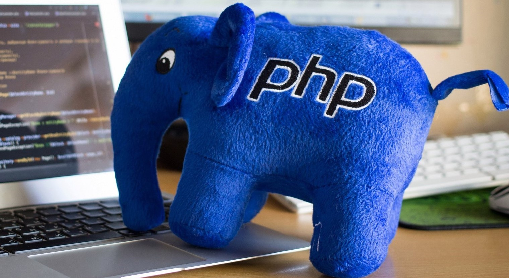
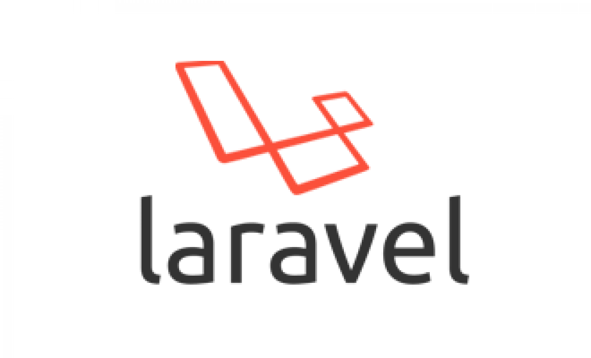
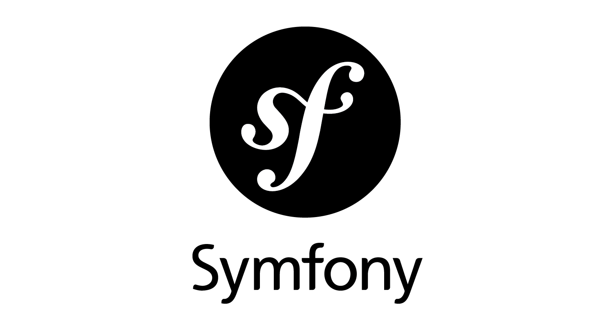
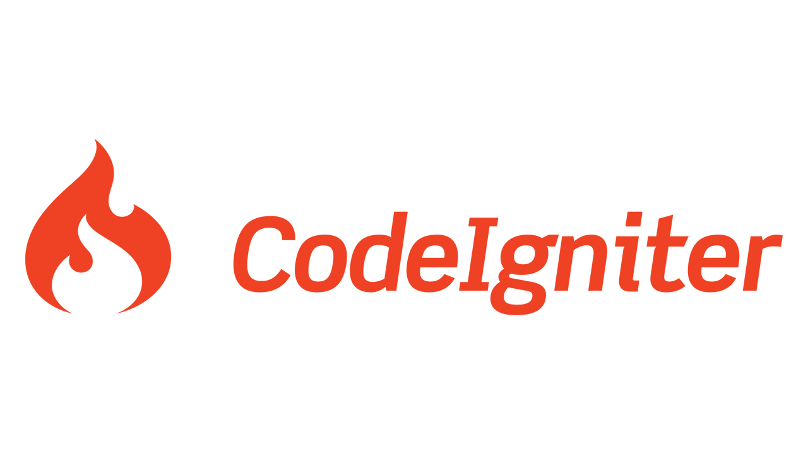

PHP: Серверный язык программирования
PHP (Hypertext Preprocessor) — один из самых популярных языков программирования для создания веб-приложений. Он используется для серверной части сайтов и позволяет создавать динамические страницы, работать с базами данных и обрабатывать пользовательские запросы. PHP прост в освоении и поддерживает множество расширений для разных задач, что делает его гибким инструментом для разработчиков.
Ключевые особенности PHP:
- Легкость в изучении и использовании даже для новичков.
- Быстрая интеграция с HTML и поддержка различных баз данных.
- Широкий выбор фреймворков и инструментов для ускорения разработки.
- Огромное сообщество и обширная документация.
История PHP:
В сентябре того же года Расмус посмотрел на PHP шире и — на короткое время — убрал из названия аббревиатуру PHP. Теперь в виде инструмента FI (сокращение от «Интерпретатор Форм») новая реализация включала в себя набор основных функций того PHP, который мы знаем сегодня. Функции языка включали Perl-подобные переменные, автоматическую интерпретацию форм и встраиваемый в HTML синтаксис. Синтаксис языка был похож на язык программирования Perl, хотя и был гораздо более ограниченным, простым, и отчасти противоречивым. Чтобы вставлять код в HTML-файл, разработчикам пришлось использовать HTML-комментарии. Хотя этот метод был недостаточно хорошо принят, FI по-прежнему набирал популярность как CGI-инструмент, но всё-таки не как язык. Однако перемены начались в следующем месяце, когда в октябре 1995 года Расмус выпустил полностью переписанный код. С вернувшимся именем PHP, но уже сокращённым от Personal Home Page Construction Kit, это был первый релиз, который мог похвастаться расширенным интерфейсом сценариев. Язык намеренно напоминал язык программирования Си по структуре, поэтому разработчики, которые были знакомы с Си, Perl и похожими языками, легко воспринимали язык. Поскольку до сих пор разработчики ограничивались UNIX- и POSIX-совместимыми системами, они стали исследовать пути работы с PHP на системах Windows NT.
Код получил ещё одно существенное преобразование в апреле 1996 года. Объединив названия предыдущих версий, Расмус представил PHP/FI. Реализации второго поколения начали по-настоящему развивать PHP из набора инструментов в самостоятельный язык программирования. PHP включал в себя встроенную поддержку баз данных DBM, mSQL и Postgres95, блоки данных cookies, поддержку функций, которые определяли пользователи, и многое другое. В июне PHP/FI присвоили версию 2.0. Интересный факт — существовала только одна полная версия PHP 2.0. Когда она, наконец, в ноябре 1997 года вышла из статуса бета-версии, базовый движок синтаксического анализа уже полностью переписали.
Несмотря на короткую историю разработки, PHP/FI продолжал набирать популярность в молодом мире веб-разработки. В 1997 и 1998, PHP/FI стал культом для нескольких тысяч пользователей по всему миру. Исследования Netcraft в мае 1998 года показали, что почти 60 тысяч доменов передавали заголовки, которые содержали значение «PHP», что подтверждало установку на сервере языка PHP. Это число равнялось примерно 1 % от всех доменов в Интернете в то время. Несмотря на эти впечатляющие цифры, развитие PHP/FI было обречено на ограничения; хотя ряд участников вносил незначительный вклад, язык по-прежнему в основном разрабатывал один человек.
Популярные фреймворки на PHP
Фреймворки на PHP упрощают разработку сложных веб-приложений, предоставляя готовую структуру и набор инструментов для создания надежного и масштабируемого кода. Вот некоторые из самых популярных фреймворков:
Laravel
Laravel — один из самых популярных фреймворков PHP, известный своей элегантностью и удобством использования. Он предоставляет широкий набор инструментов, включая маршрутизацию, миграции баз данных, шаблонизатор Blade и поддержку API. Laravel позволяет быстро разрабатывать сложные веб-приложения благодаря удобному синтаксису и богатому экосистемному набору пакетов.
Symfony
Symfony — мощный фреймворк для разработки корпоративных приложений. Он известен своей модульной структурой и большим набором компонентов, которые могут использоваться отдельно или вместе для создания сложных решений. Symfony следит за лучшими стандартами кода и имеет сильное сообщество разработчиков, поддерживающих фреймворк.
CodeIgniter
CodeIgniter — легкий и быстрый фреймворк, подходящий для создания небольших и средних проектов. Он прост в освоении, имеет низкий порог входа и минимальные требования к серверу, что делает его отличным выбором для новичков и небольших команд разработчиков.
Применение PHP в веб-разработке
PHP используется в различных аспектах веб-разработки и является основой многих популярных сайтов и приложений. Ниже приведены ключевые области применения PHP:
- Создание динамических сайтов: PHP позволяет создавать страницы, которые изменяются в зависимости от действий пользователя, таких как формы, форумы и интернет-магазины.
- Работа с базами данных: PHP поддерживает соединение с различными базами данных, такими как MySQL, PostgreSQL и SQLite, что позволяет легко сохранять и извлекать данные.
- Разработка RESTful API: PHP часто используется для создания серверной части RESTful API, которые обеспечивают взаимодействие между клиентскими и серверными приложениями.
- Контент-менеджмент: Системы управления контентом (CMS) на базе PHP, такие как WordPress и Joomla, используют PHP для управления и публикации контента на сайтах.